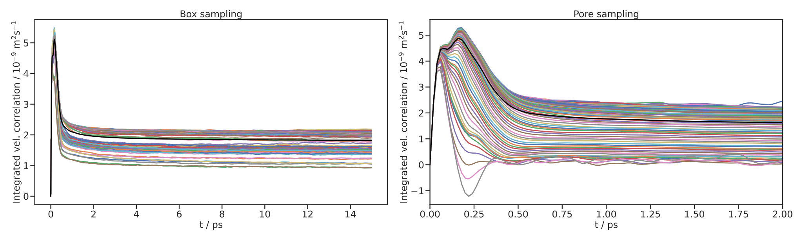
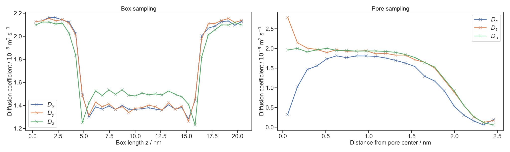

Diffusion Analysis with the VACF¶
Example code to analyse a local diffusion profile over the simulation box. The method can run for a specific pore system (using a pore.yml file from PoreMS) or an other simulation box.
Import packages¶
import poreana as pa
import porems as pms
import matplotlib.pyplot as plt
Create the molecules¶
# Load molecule
mol = pms.Molecule(inp="tip4p2005.gro")
# Set mass
mol.set_masses([15.999,1.00784,1.00784,0])
VACF Inputs¶
Specifiy VACF inputs for the sampling
# Inputs for sampling
len_corr = 15e-12 # Correlation time of the molecule in seconds
new_time_o = 1e-13 # New time origin in seconds
sample_st = 20 # sample rate of frames
len_fr = 1e-15 # time between two frames in seconds
Sample the VACF for the trajectory¶
The local VACF diffusion analysis need the sampled object file using the vacf diffusion routine. In this example the density is sampled along the z-axis (direction = 2) of the simulation box.
sample = pa.Sample("pore.yml", "traj_SOL.trr", mol, masses = [15.999,1.00784,1.00784,0])
sample.init_diffusion_vacf("diff_vacf.obj", len_correration=len_corr, new_time_origin=new_time_o, sample_step=sample_st, len_frame=len_fr, bin_num=32, direction=2)
sample.sample(is_parallel=False)
Finished on one Core for frames 0-200000
The VACF is used to sample the diffusion inside a pore in radial, axial and tangial direction (direction = “radial”).
sample = pa.Sample("pore.yml", "traj_SOL.trr", mol, masses = [15.999,1.00784,1.00784,0])
sample.init_diffusion_vacf("diff_vacf_radial.obj", len_correration=len_corr, new_time_origin=new_time_o, sample_step=sample_st, len_frame=len_fr, bin_num=32, direction="radial")
sample.sample(is_parallel=False)
Finished on one Core for frames 0-200000
Display the integrated VACF for every bin¶
With the sampling obj-file the integrated velocity correlation for every bin in the simulation box can be displayed.
fig, ax = plt.subplots(figsize=(30,9))
ax1 = plt.subplot(1,2,1)
plt.title("Box sampling")
pa.diffusion.plot_correlation_per_bin("diff_vacf.obj", plot_axis = ax1, direction= "z")
ax2 = plt.subplot(1,2,2)
plt.title("Pore sampling")
pa.diffusion.plot_correlation_per_bin("diff_vacf_radial.obj", plot_axis = ax2, pore_id = "shape_00", direction = "a")
plt.xlim([0,2])
plt.tight_layout()
plt.savefig("integration_vacf.svg")
Sampled 673_047_282 data points (including time reversal) for VACF calculation.
Sampled 145_760_688 data points (including time reversal) for VACF calculation.
{kind=link}

Display the diffusion profile over the box length¶
The following function can use to show the diffusion profile over the simulation box
fig, ax = plt.subplots(figsize=(30,9))
ax1 = plt.subplot(1,2,1)
plt.title("Box sampling")
diffusion_profile, diffusion_mean = pa.diffusion.diffusion_per_bin("diff_vacf.obj", plot_selection="xyz", plot_axis= ax1, combine_bins=4, mean_over_time=10e-12)
plt.legend()
ax2 = plt.subplot(1,2,2)
plt.title("Pore sampling")
diffusion_profile, diffusion_mean = pa.diffusion.diffusion_per_bin("diff_vacf_radial.obj", plot_selection="rat", pore_id = "shape_00", plot_axis= ax2, combine_bins=6, mean_over_time=10e-12)
plt.legend()
plt.tight_layout()
plt.savefig("diff_profile_vacf.svg")
Sampled 673_047_282 data points (including time reversal) for VACF calculation.
Mean over last 500 steps.
Sampled 145_760_688 data points (including time reversal) for VACF calculation.
Mean over last 500 steps.
{kind=link}

Calculating diffusion coefficients¶
# Using the diffusion profile in z-directions
diffusion_profile, diffusion_mean_res = pa.diffusion.diffusion_per_bin("diff_vacf.obj", section = [0,5], combine_bins=8, mean_over_time=10e-12)
diffusion_profile, diffusion_mean_pore = pa.diffusion.diffusion_per_bin("diff_vacf.obj", section = [5,15], combine_bins=4, mean_over_time=10e-12)
print("Box Sampling")
print("\nReservoir diffusion : ", diffusion_mean_res[2], "m²/s")
print("Pore diffusion : ", diffusion_mean_pore[2], "m²/s")
print("Reservoir/Pore ratio : ", diffusion_mean_res[2]/diffusion_mean_pore[2])
# Using the diffusion profile in the pore
diffusion_profile, diffusion_rad_pore = pa.diffusion.diffusion_per_bin("diff_vacf_radial.obj",pore_id = "shape_00", combine_bins=4, mean_over_time=10e-12)
print("Pore Sampling")
print("Pore diffusion (axial) : ", diffusion_rad_pore[2], "m²/s")
print("Pore diffusion (radial) : ", diffusion_rad_pore[0], "m²/s")
Box Sampling
Reservoir diffusion : 1.9675621308108457 m²/s
Pore diffusion : 1.457195798962518 m²/s
Reservoir/Pore ratio : 1.3502386791203311
Pore Sampling
Pore diffusion (axial) : 1.5062768636353063 m²/s
Pore diffusion (radial) : 1.2449438793219074 m²/s